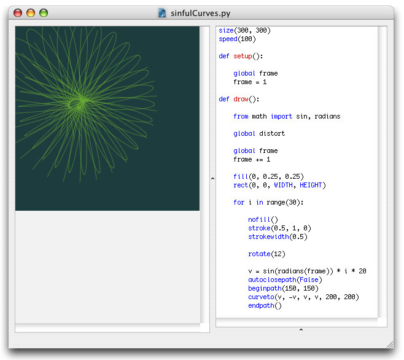
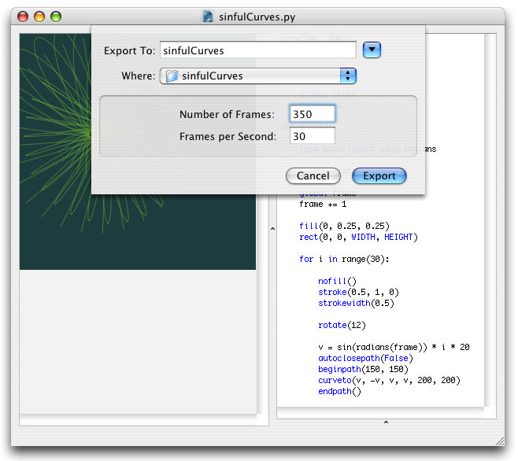

Animation
NodeBox not only exports to PDF documents and images, but handles animation as well, which can be exported to QuickTime movies. Using the same syntax as drawing, your can turn your script into an animation, doing all kinds of wonderful, lively things.
The speed(), setup(), and draw() commands
For an animation to work, it needs three things:
- speed(): the speed() command indicates the speed of the animation in frames per second. Note that this is a maximum: big animations will require more work, and thus run slower.
- setup(): your own setup() definition, declaring global variables and initializing them.
- draw(): your own draw() definition, doing the actual drawing.

You may already know a little bit about defining your own commands from the Templating tutorial.
The setup() command is run once, at the beginning of the animation, and draw() is run on each frame, or step, in the animation. Take a look at the example above. What I'm doing there in the setup() definition, is declaring a global variable named frame, which I'm going to use later on in the draw() to keep track of the animation frame being rendered on the canvas. The variable needs to be a global, because otherwise setup() and draw() can't communicate, or share the variable.
Now examine the draw() definition. It's a typical example of an animation script. The draw() command is called repetively by NodeBox, rendering frame after frame of animation. In the example above, the draw() definition basically does four things:
- Increase the frame variable by one (this is my frame counter)
- Use a colored rectangle to draw a background
- Draw thirty rotated curves
- Use the math sin() function to distort the curves fluidly
Fluid movement
Notice the use of a mathematical sine function in the draw() definition. A sine is an oscillating function that yields values between -1.0 and 1.0 (and then back down to -1.0), but not in a linear fashion. When it reaches -1 or 1, it goes slower, and goes fastest when it crosses 0. This is useful for animation that eases in or eases out.
To use the sin() function, import it from the Python math package along with the radians() function (sines work with radians like PI). In the example above I supply the frame variable as radians to the sine function and multiply it with a differnt number for each curve, which gives me a fluid distortion vector that eases in and eases out each curve.
A sine function typically looks like this:
from math import sin, radians ease = sin(radians(x)) * y
Tips for speed optimization
- If you plan to use a lot of lines in your animation, group them in a single path with lineto() and moveto(). A single big path renders faster than many small paths. All the lines would have the same stroke color and width however.
- If you plan to use a lot of text in your animation, create cached textpath() versions in the setup() command and translate() those when drawing instead of repeatedly calling text() in the draw() command.
- Tune the speed() command to exactly the speed you need. Setting it as high as possible often works as a drawback because then NodeBox would attempt to update too much.
- Tune the size() of the canvas to exactly what you need - a smaller canvas means less screen to refresh.
Exporting as a Quicktime movie
You can export an animation as a Quicktime movie. Select "Export as Quicktime Movie..." from the NodeBox File menu, or press shift-apple-e. You can select a number of frames to export, and a movie frame rate.
The Quicktime functionality in NodeBox is based on PyQTSequence written by Bob Ippolito.

The resulting movie is uncompressed, so it will likely be large in file size. You can compress it if you have Quicktime Pro, or some other movie editor.
...and you have a movie to put on your website!